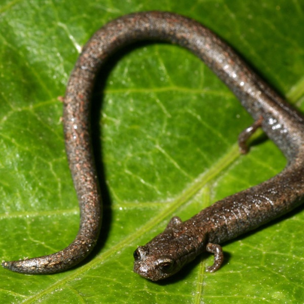

Batrachoseps gregarius
- Common name
- Gregarious Slender Salamander
- Family
- Plethodontidae
- Family common name
- Lungless salamanders
- Order
- Caudata
- Order common name
- Salamanders
- Habitat and Range
- The gregarious slender salamander is endemic to the western slopes of the southern and central Sierra Nevada in California, United States. It occurs at altitudes of up to 1,800 m (6,000 ft) but in the southern parts of its range seldom occurs above 900 m (3,000 ft). Its range includes riparian zones in the Central Valley and it is common in southern Tulare County and northern Kern County in the drainages of the White River and its tributary, the Arrastre Creek. The habitat is quite variable over different parts of the range but is mainly relatively open oak woodland with interior live oak (Quercus wislizeni), blue oak (Quercus douglasii) and foothill pine (Pinus sabiniana), or sometimes mixed coniferous forest with ponderosa pine (Pinus ponderosa), incense cedar (Calocedrus), white fir (Abies concolor) and California black oak (Quercus kelloggii). In the north of its range, it is plentiful in coniferous forest with sugar pine (Pinus lambertiana) and giant sequoias (Sequoiadendron giganteum) and near the Kern River, in the south of its range, it is found in dry grassland with scattered boulders.
Range Map
Seasonality